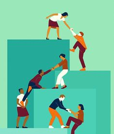

Make a Difference Today
Your donation can change lives and bring hope to those in need. Help one person and change the world. Every donation is a step toward changing lives! At Enid Donations, we believe in the power of kindness and generosity to bring hope to those in need. Join us in making a difference—because even the smallest act of giving can create a ripple effect of positive change. 💙✨ #EnidDonations #GiveHope #MakeADifference Click the button below to find out more and donate.
Donate Now About
What We Do
Enid Donations is a dedicated platform mobilizing resources to empower underserved communities. We connect generous donors with those in need, providing essential support that uplifts lives and fosters sustainable growth.
How We Started
Our journey began as a small initiative by passionate individuals driven by personal experiences of witnessing hardship and a genuine commitment to social justice. What started as a spark of kindness has evolved into a community dedicated to making a lasting impact.